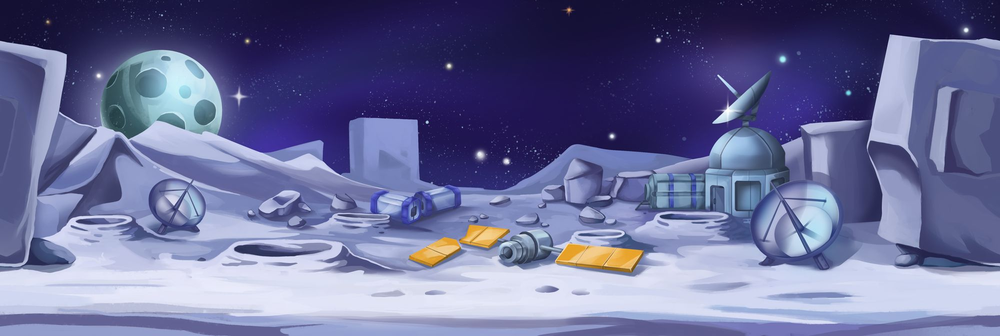

Astroon Idle

Astroon Idle is an idle manager mobile game offering players a dynamic experience:
- Unlocking and upgrading buildings for specific purposes
- Merging hexagon mines to gather basic resources
- Refining resources to create ship parts
- Strategically upgrading individual Astroons for optimal performance
- Managing the crucial solar energy resource through merging solar panels
Astroon Idle intricately weaves resource management, merging mechanics, and strategic upgrades, delivering an engaging and rewarding idle gaming experience.
Code Snippets
Game Resources
[Serializable]
public class GameResources
{
[SerializeField]
internal Dictionary<ResourceType, Resource> Resources = new Dictionary<ResourceType, Resource>();
public GameResources()
{
Resources = new Dictionary<ResourceType, Resource>();
}
public GameResources(Dictionary<ResourceType, Resource> resources)
{
Resources = resources;
}
public bool HasAtLeast(GameResources requirements)
{
if (requirements == null)
return true;
foreach (var requirement in requirements.Resources)
{
if (!(Resources.ContainsKey(requirement.Key) && requirement.Value.Quantity > AlphabeticNotation.zero) ||
Resources[requirement.Key] < requirement.Value)
return false;
}
return true;
}
public void AddOrCreateResource(ResourceType resourceType, Resource resourceToAdd)
{
if (Resources.ContainsKey(resourceType))
Resources[resourceType] += resourceToAdd;
else
Resources.Add(resourceType, resourceToAdd);
}
public static GameResources operator +(GameResources a, GameResources b)
{
var result = new GameResources();
if (a != null)
foreach (var kvp in a.Resources)
result.AddOrCreateResource(kvp.Key, kvp.Value);
if (b != null)
foreach (var kvp in b.Resources)
result.AddOrCreateResource(kvp.Key, kvp.Value);
return result;
}
public static GameResources operator -(GameResources a, GameResources b)
{
var result = new GameResources();
if (a != null)
foreach (var kvp in a.Resources)
result.AddOrCreateResource(kvp.Key, kvp.Value);
if (b != null)
foreach (var kvp in b.Resources)
{
if (result.Resources.TryGetValue(kvp.Key, out _))
result.Resources[kvp.Key] -= kvp.Value;
else
Debug.LogError(kvp.Key + " not found!");
}
return result;
}
}Mine Merger
public class MineMergerRemake : MergerRemake
{
[SerializeField] private MineDataSORemake mineDataSo;
[SerializeField] private ResourceType mineralType;
[SerializeField] private SpriteRenderer bgSpriteRenderer;
[SerializeField] private SpriteRenderer mineSpriteRenderer;
[SerializeField] private MineRemake ownMine;
[SerializeField] private HexagonRemake ownHex;
private RaycastHit2D[] _hit = new RaycastHit2D[2];
private void Start()
{
OnMinePressedDown += TurnGreenIfMergeable;
OnMinePressedUp += TurnToPreviousColorFromGreen;
}
private void OnDisable()
{
OnMinePressedDown -= TurnGreenIfMergeable;
OnMinePressedUp -= TurnToPreviousColorFromGreen;
}
protected override void OnMouseDown()
{
if (MergeLevel == 0)
return;
base.OnMouseDown();
OnMinePressedDown?.Invoke(this, new MineEventArgs
{
Level = MergeLevel,
MineralType = mineralType
});
SetSelectedOrderInLayer();
}
protected override void OnMouseUp()
{
PanZoom.Instance.mapIsMovable = true;
if (MergeLevel == 0)
return;
int hitCount = Physics2D.RaycastNonAlloc(transform.position, Vector2.zero, _hit);
if (hitCount is 0 or 1)
{
transform.position = InitialPos;
OnMinePressedUp?.Invoke(this, EventArgs.Empty);
return;
}
RaycastHit2D targetHit = default;
foreach (var hit in _hit)
{
if (!hit.transform.TryGetComponent(out MineMergerRemake selfMerger))
continue;
if (selfMerger == this)
continue;
targetHit = hit;
break;
}
if (targetHit.collider != null
&& targetHit.transform.TryGetComponent(out MineMergerRemake otherMineMerger)
&& otherMineMerger != this)
{
if (otherMineMerger.MergeLevel == 0)
{
if (otherMineMerger.ownMine.IsDeactivated())
SwitchPlaces(otherMineMerger.transform);
OnMinePressedUp?.Invoke(this, EventArgs.Empty);
return;
}
if (otherMineMerger.mineralType == mineralType
&& otherMineMerger.MergeLevel == MergeLevel)
{
Merge(otherMineMerger);
OnMinePressedUp?.Invoke(this, EventArgs.Empty);
return;
}
}
transform.position = InitialPos;
OnMinePressedUp?.Invoke(this, EventArgs.Empty);
}
protected override void Merge(MergerRemake otherMerger)
{
base.Merge(otherMerger);
MineMergerRemake otherMineMerger = otherMerger as MineMergerRemake;
otherMineMerger.SetVisuals();
RemoveVisuals();
MineManager.Instance.AddNewMine(otherMineMerger.ownMine);
MineManager.Instance.RemoveMine(ownMine);
MineManager.Instance.CalculateMineCountsAndGeneration();
}
}